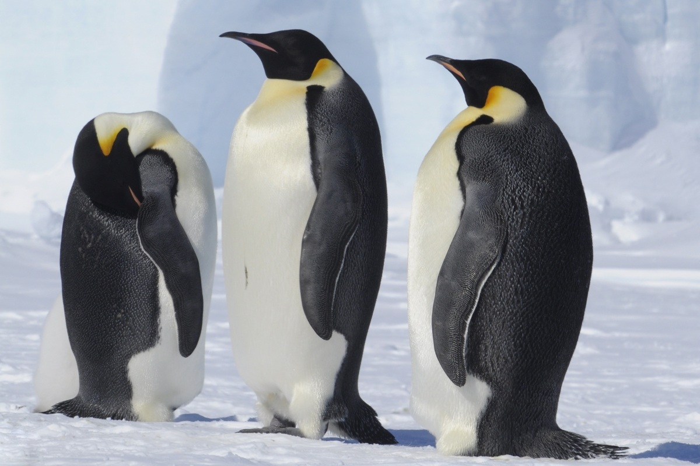
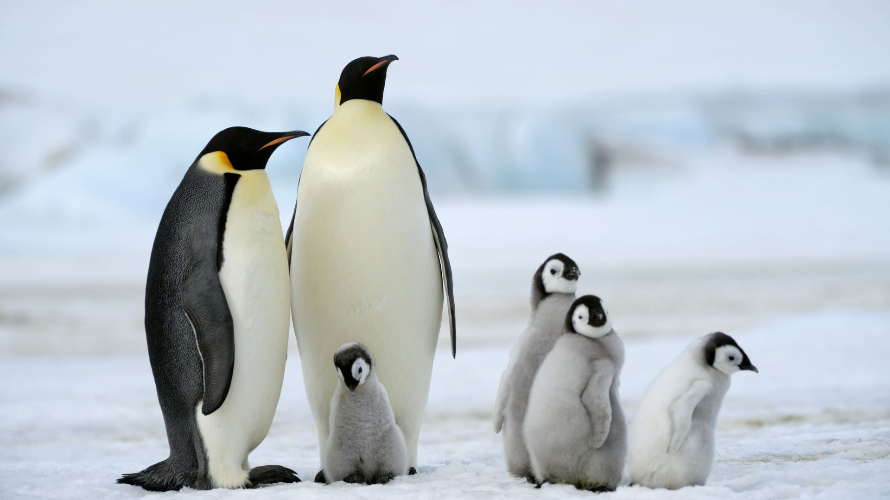

African Penguin
African Penguin - Spheniscus demersus
The African penguin, also known as Jackass Penguin, is a small banded species with a social
behavior that inhabits the warm environments of South Africa and part of the coast of Namibia.
African's life expectancy in the wild is between 10-12 years.
Chinstrap Penguin
Chinstrap Penguin - Pygoscelis antarcticus
A thin line around the face distinguishes the Chinstrap penguin, a species that lives on several
islands and has a great ability for the construction of nests during its reproductive season.
Chinstrap's life expectancy in the wild is 12 years.

Emperor Penguin
Emperor Penguin - Aptenodytes forsteri
It is the largest penguin in the world, with an incredible capability to dive deep waters. It
performs one of the hardest migrations in the animal kingdom to reach its nesting grounds in
Antartica which suppose a high resistance to withstand freezing temperatures. Emperor's life
expectancy in the wild is 20 years.

Gentoo Penguin
Gentoo Penguin - Pygoscelis papua
It is one of the most recognizable penguins because a white stripe around the eyes that goes
through the head. There are two subspecies of this penguin which is part of the group of
Brush-tailed Penguins and is the largest species of its genus. Gentoo's life expectancy in the
wild is between 10-15 years.

Adelie Penguin
Adelie Penguin - Pygoscelis adeliae
The Adelie Penguin is a species with one of the most stable populations of all penguins. Their
distinctive eyes rounded by a white circle that contrasts with the completely black head, help
to recognize them. It is one of the two species that spend their life in Antartica. Adelie's
life expectancy in the wild is 10 years.

King Penguin
King Penguin - Aptenodytes patagonicus
The king penguin is the second largest species and features bright and intense colors in its
chest, head and beak. The king penguin has two subspecies distributed around several
subantarctic islands, with climates ranging from temperate to cold. King's life expectancy in
the wild is 20 years.
Galapagos Penguin
Galapagos Penguin - Spheniscus mendiculus
The Galapagos Penguin inhabits the islands with the same name where the climate is mainly hot.
It is the penguin that lives north most, very close to the Equator and eventually reaches waters
of the northern hemisphere. They have feeding and reproductive habits different than
those of their southern relatives. Galapagos' life expectancy in the wild is 9.5 years.
Erect-crested Penguin
Erect-crested Penguin - Eudyptes sclateri
The Erect-crested Penguin are native to the Antipodes and Bounty Islands, a pair of remote
places protected from human activity by the government of New Zealand, which make them hard to
see. Despite this, it is one of the species most threatened penguin species. Erect-crested's
life expectancy in the wild is 10 years.

Macaroni Penguin
Macaroni Penguin - Eudyptes chrysolophus
Macaroni Penguins have a prominent orange-yellow plume that attracts attention. It is one of the
most migratory, aggressive and territorial, penguins and prefers to feed on fish and squid.
Macaroni's life expectancy in the wild is 12 years.
Fiordland Penguin
Fiordland Penguin - Eudyptes pachyrhynchus
The Fiordland penguin is a crested penguin native to West New Zealand which inhabits the
Fiordland region of this country. Its limited distribution makes it one of the least known
penguins. Two white patches on each side of the beak make it different from other crested
penguins. Fiordland life expectancy in the wild is Unknown.
Snares Penguin
Snares Penguin - Eudyptes robustus
The Snares Penguin exclusively inhabits the Snares Island in New Zealand. It is part of the
group of crested penguins, and its appearance is very similar to the Fiordland penguin. It
mainly feeds on krill and squid and only around 20% of fish. Snares' life expectancy in the wild
is 11 years.
Magellanic Penguin
Magellanic Penguin - Spheniscus magellanicus
The Magellanic Penguin belongs to the group of banded penguins which makes it similar to the
Humboldt, African, and Galapagos penguins. It inhabits beautiful landscapes in Argentina and
Chile, and it is profoundly affected by “El Niño” phenomenon. Magellanic's life expectancy in
the wild is 10 years.
Royal Penguin
Royal Penguin - Eudyptes schlegeli
The Royal Penguin is part of the group of crested penguins, but it has an entirely white face
which makes it easy to identify. It inhabits some Australian islands where it feeds on up to 50%
krill and the rest of fish and squid. Royal's life expectancy in the wild is 12 years.
Little Blue Penguin
Little Blue Penguin - Eudyptula minor
The Little Blue Penguin is the smallest species with a height of 13 inches. Its feathers have a
blueish color, and they inhabit several places of Australia, New Zealand, Tasmania and some
islands. They are not migratory and mainly nocturnal penguins. Little Blue's life expectancy in
the wild is between 6-20 years.

Rockhopper Penguin
Rockhopper Penguin - Eudyptes
The Rockhopper penguin has red eyes, short beak, and a characteristic plume. It is part of the
crested penguins and has two subspecies distributed in a large area which includes South America
and several subantarctic islands. Rockhopper's life expectancy in the wild is 10-15 years.
Yellow-eyed Penguin
Yellow-eyed Penguin - Megadyptes antipodes
The Yellow-eyed Penguin has golden-yellow spots around its eyes. It inhabits several islands
around New Zealand, and It is not a migratory species. It groups in small colonies as this
penguin is not as social as the other species. Yellow-eyed's life expectancy in the wild is 9-10
years.
Humboldt Penguin
Humboldt Penguin - Spheniscus humboldti The Humboldt Penguin is native to the Peruvian and
Chilean coasts. It is a Banded Penguin with a Vulnerable conservation status due to several
threats, mainly overfishing, that make them harder to find food. Humboldt's life expectancy in
the wild is between 10-12 years.